← 返回阅读库 · 原论文目录
论文讲解阅读文档 · 新模型 · v050
BEVT BERT Pretraining of Video Transformers[2112.01529]
视频时长 00:10:22；讲解文字 4,738 字符；提取讲解画面 36 张。按视频原顺序阅读，每段文字保留时间戳。
文字来自整段视频的自动语音转写，按自然停顿分段，并与 PPT / 论文页面 / 演示画面对齐。未将讲解压缩为摘要；术语、数字和口述公式请结合画面及原论文核对。 阅读稿已校正规范部分明确术语误识别；原始逐字稿和每处修改记录另行保留。
讲解画面为源视频截图（640×360），不是可编辑 PPT 文件。全片按每秒 2 帧扫描内容变化，逐步展开页保留；连续动画保留代表画面。清晰度受源视频限制。
下载完整资料包 · 含离线 HTML、PDF、Word、全部 PPT 画面和字幕。
原论文与材料
BEVT: BERT Pretraining of Video Transformers · 下载完整 PDF（12 页）
按时间阅读
00:00:00–00:00:14 · 画面 001
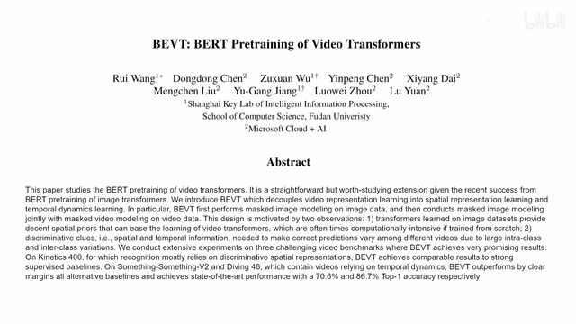
00:00:00–00:00:14 · 画面 001大家好啊,今天我们来快速说一篇论文,BEVT,BERT Pre-training of Video Transformers,看标题你大概知道这个文章是干什么了。我们在这之前呢,快速来回顾一下这个 BERT。BERT 呢,是 Bidirectional Encoder Representations from Transformer,它呢在这个 NLP 里面非常有名了。它呢是一个很经典的用这个 Transformer 做问答的这么一个系统。那在这篇文章中呢,作者强调,
00:00:14–00:00:52 · 画面 002
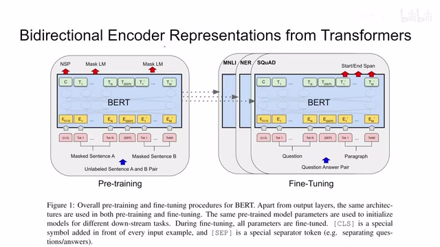
00:00:14–00:00:52 · 画面 002我们为下游每一个任务从头开始训练一个 Transformer 这样是不太经济的一个常见的做法是我们先做 PretrainingPretraining 完之后再 Fine-tuning 从我们一个预训练好的模型里面往下游吞出几个任务来就可以了那么预训练该怎么进行这里我们看到作者使用的 Mask Language Modeling 就是 MLM 它也就是 Bert 这篇文章最核心的一个贡献
00:00:52–00:01:30 · 画面 003
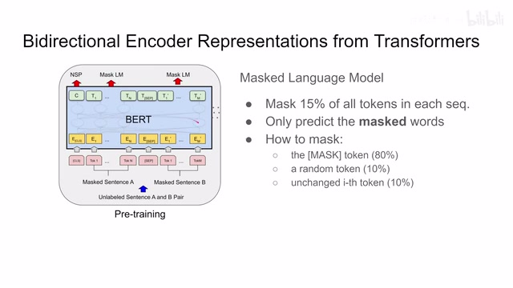
00:00:52–00:01:30 · 画面 003我们看到一个 transformer 的它的输入呢是一串这个 token 这里呢我们做问答嘛所以呢我们有两句话一开始的是这个任务的类型的这个 token 啊然后呢是第一句话的 token 分割符第二句话的 token 那因为我们是做 pre-training 嘛我们也没有正式的 label 所以呢就是随便的两句话那么什么是这个 masked language model 呢我们呢会把这个每个序列中大概 15%的这样一个 token 给它 mask 掉在 mask 之后呢我们要求这个 transformer 去预测这个 mask 的东西那么因为我们处理的是这个 word 啊所以呢这个任务呢很自然的就变成了一个这个多分类的任务那么这样子呢一个非监督的任务就可以构建起来了那么下面我们继续来看这 15%的这个 token 应该怎么 mask 呢这里呢作者说在 80%的情况下呢
00:01:30–00:01:31 · 画面 004
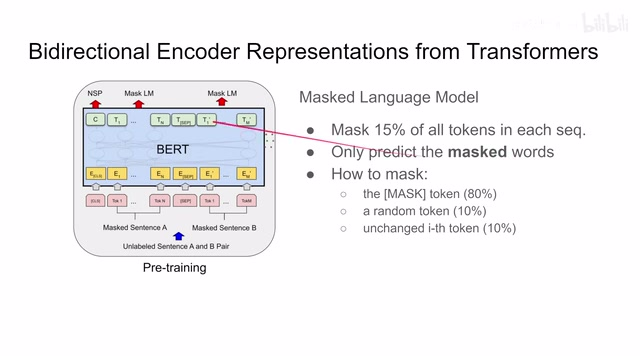
00:01:30–00:01:31 · 画面 00400:01:31–00:01:42 · 画面 005
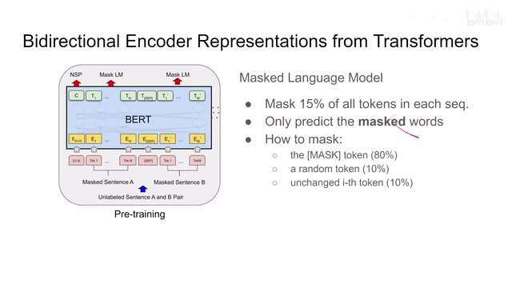
00:01:31–00:01:42 · 画面 00500:01:42–00:01:43 · 画面 006
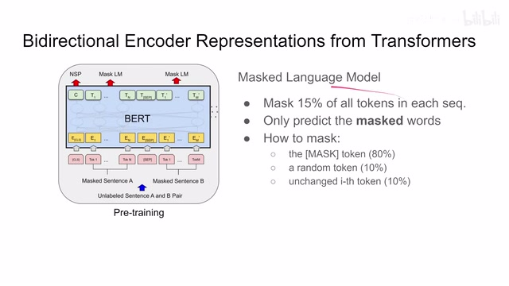
00:01:42–00:01:43 · 画面 00600:01:43–00:01:54 · 画面 007
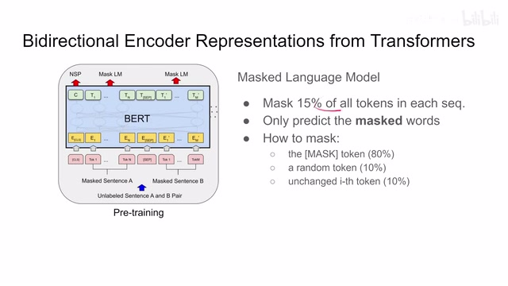
00:01:43–00:01:54 · 画面 007我们呢用一个 mask token 来替代原来这个 token10%的情况下呢我们随机选一个其他的 token 来替换原来的 token 那么还有 10%的情况下呢我们就是原来这个 token 不变啊就保留下来了那么这个呢就是 bert 的核心的贡献你可以看到他使用了 encoder 所以叫做 encoder representations 那这时候有朋友问这个 bidirectional 呢是什么意思呢他呢就是描述的这个时序的概念
00:01:54–00:02:03 · 画面 008
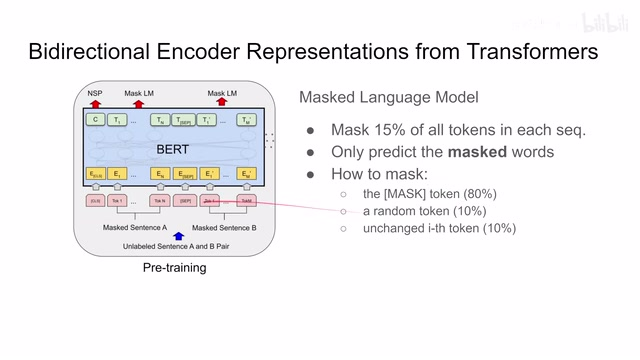
00:01:54–00:02:03 · 画面 00800:02:03–00:02:05 · 画面 009
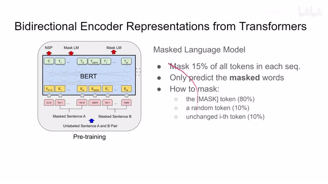
00:02:03–00:02:05 · 画面 00900:02:05–00:02:53 · 画面 010
00:02:05–00:02:53 · 画面 010像我们在这个原来的 attention saw unit 这个 transformer 里面呢 decoder 它是有一个 mask 的也就是说在 decoder 当中每一个 token 呢只跟它之前的这些 token 发生了这个 attention 跟它后面的这些 token 呢是没有关系的那么这里呢与之区别的一个 token 呢它既可以跟之前的这些 token 发生关系也可以跟它之后的这些 token 发生关系也就是说这个 attention 里面是没有这个时间上这个 mask 的
所以呢他叫做 bidirectional 那么好的那么有了这个 bert 相关的这个 background 呢我们知道这个预测这个 mass 的 token 这样一个任务呢我们就来看到本文的这个 bevt 了那 bevt 呢把 bert 的这个思想放到这个 image 甚至是 video 上来那么对于 video 来说呢作者说我无非就是要学这个 spatial representation 还有这个 temporal dynamics 那么这两个呢我们就分别放到这两个 stream 中来学习了那么可以看到呢
00:02:53–00:03:24 · 画面 011
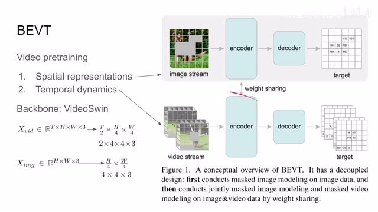
00:02:53–00:03:24 · 画面 011这里作者维护了两个 stream 一个是用来处理 image 一个是处理 video 的这里作者使用这个 Video Swin 作为这个 backbone 这里是这个 video 还有 image 如何划分成一个个 cube 或者是这个 patch 那么这里的任务跟之前的 bert 一样的我们是 encoder 加 decoder 出来之后我们要预测被 mask 的这些的 token 更确切来说我们其实是预测的一个 embedding
00:03:24–00:03:30 · 画面 012
00:03:24–00:03:30 · 画面 01200:03:30–00:03:32 · 画面 013
00:03:30–00:03:32 · 画面 01300:03:32–00:03:43 · 画面 014
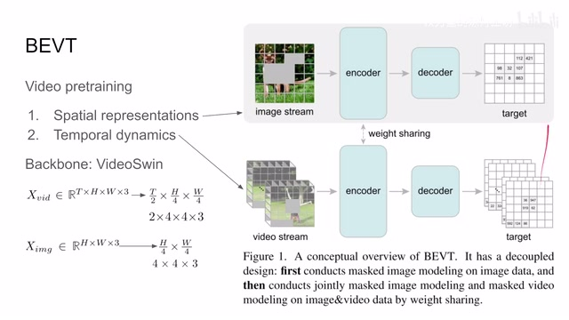
00:03:32–00:03:43 · 画面 014那么下面呢我们继续来看这里呢坐这说把我们这个预测这个 mask video 呢叫做 mvm 这个预测这个 mask image 呢叫 mim 那么首先区别于 bert 甚至区别于 MAE 那这里呢本文呢预测的呢并不是原始的这个像素而是预测这个 mask 的这个 tokens 也就是说我们需要额外的这个 tokenizer 把我们的 patch 变成 token 然后呢我们去预测这个 token
00:03:43–00:04:22 · 画面 015
00:03:43–00:04:22 · 画面 015那这里呢作者选用一个预训练好的这个 VQ-VAE 来作为这个 tokenizer 来我们先在原始的像素中或者视频中把这些一个个 token 给它提出来然后呢我们就可以做这个 image 还有这个 video 的这个 mask 了那这里呢就是本文的第二个这个贡献这个 blockwise masking 那我们想到在这个 bert 里面我们是随机的选一个 token 在本文中呢作者使用是这个 blockwise 也就是说我每次随机选一个 block
00:04:22–00:04:25 · 画面 016
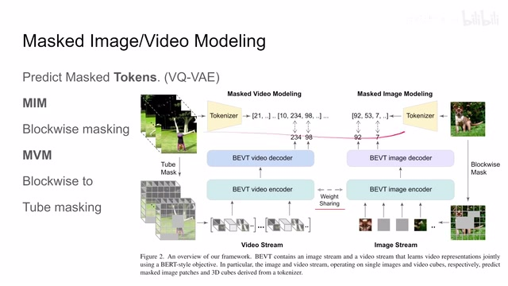
00:04:22–00:04:25 · 画面 01600:04:25–00:06:25 · 画面 017
00:04:25–00:06:25 · 画面 017来给它 mask 掉比如这里选了一个这个 2 乘 3 的这么一个 blockmask 掉然后呢我们检查发现这个 mask 掉的这个 ratiomask 掉的这个比例不够我们期望的比例那我们继续再选一个 mask 继续去 mask 掉这样不断的重复直到说我们这个 mask 掉的这个面积呢达到我们期望的要求比如说这里呢做的使用是 0.5 达到这个要求我们就停那么这个呢叫做这个 blockwise 的 mask那么对于 video 这块来说呢我们从这个 image 呢拓展来首先呢我们要在这个 video 里面选一个起始帧然后选一个长度那么在选择的这个区间里面呢我们做这个 blockwise 的这个 masking 对于这个区间内的图像的每一帧呢对于这个区间内的每一帧呢我们都做同样的这个 blockwise masking 那这样子呢相当于我们整个一个 tube 都被 mask 掉了你可以看到这里呢这里有一个图示
也就是说我的这一段这个视频里面我的所有的这些帧都按照相同的位置给它 mask 掉这个呢是作者在这个 video 上做的这个 mask 的处理那么此外呢还有一点要注意的就是我们的这个 video encoder 和这个 image encoder 它们呢是使用同样一套参数的比如说这里呢它们的 backbone 都是 Video Swin 那这里呢作者针对 video 和 image 它们不同的这个体量呢对这个网络呢做了相应的修改那他们的结构呢可以能够 share 那么具体这些调整呢如果我们后面有机会讲到这个 Video Swin Transformer 啊我们可以再来回顾一下这个问题总之现在呢我们就可以简单理解为通过各种 sampling 啊还有通过这个各种这个 MLP 的这个 projection 呢我们把他们两个的网络结构给它统一成一个然后呢他们是 share 这个权重的那么这个呢就是我们讲到这个 mask 还有这个 encoder 这个部分
00:06:25–00:06:30 · 画面 018
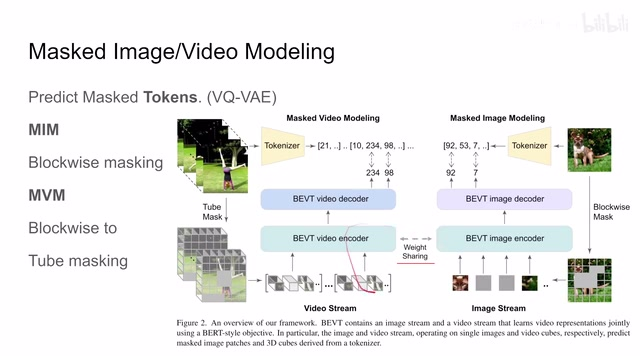
00:06:25–00:06:30 · 画面 01800:06:30–00:06:31 · 画面 019
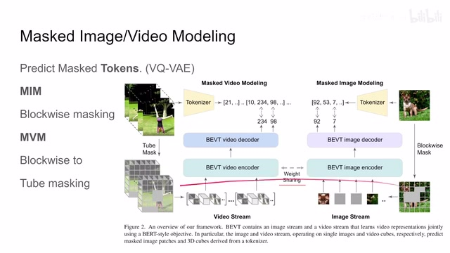
00:06:30–00:06:31 · 画面 01900:06:31–00:06:38 · 画面 020
00:06:31–00:06:38 · 画面 020那么包括我们上面这个 Label 是怎么创建出来的那么之后呢我们在网络结构上还剩下的问题呢就是这个 DecoderDecoder 是怎么处理的呢这里呢我们可以看到对于这个 Video 来说呢我们这个 Swin 的这个一个 Stage 过来之后它是把这个最高一层先做这个 Spatial 的 Upsampling 然后呢跟上一层做了 Concatenation 然后呢送到一个 LinearLayer 里面
00:06:38–00:06:39 · 画面 021
00:06:38–00:06:39 · 画面 02100:06:39–00:06:42 · 画面 022
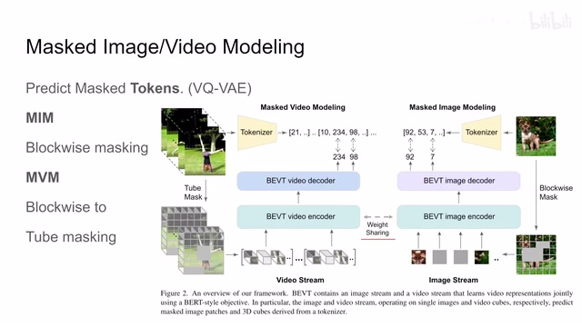
00:06:39–00:06:42 · 画面 02200:06:42–00:07:02 · 画面 023
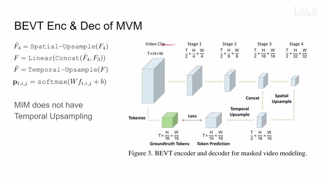
00:06:42–00:07:02 · 画面 023过完这个 linear layer 之后呢我们做一个这个 temporal upsampling 这样子呢它的这个尺度呢就跟我们的这个 token 这个 ground truth 出来的这个尺度是一样的然后呢作者这里加了一个 linear layer 然后加了一个 softmax 作为最终的这个 prediction 的结果那么这个呢是作者实现一个非常简单的这个 decoder 设计当然这个是对于 video 来说的那对于 image 来说呢我们只要把这个 t 砍去就行了
00:07:02–00:07:03 · 画面 024
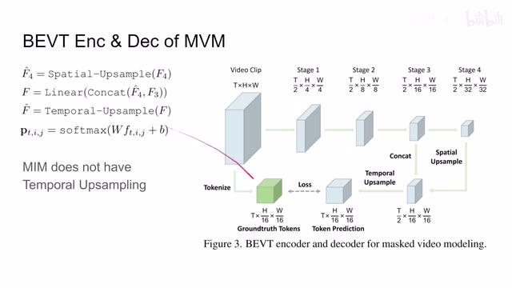
00:07:02–00:07:03 · 画面 02400:07:03–00:07:15 · 画面 025
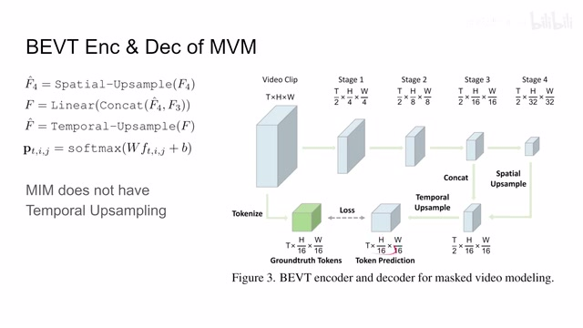
00:07:03–00:07:15 · 画面 02500:07:15–00:07:18 · 画面 026
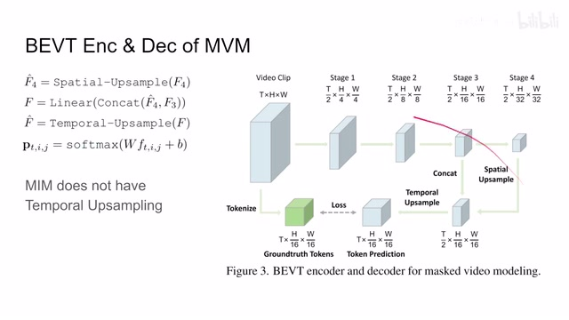
00:07:15–00:07:18 · 画面 02600:07:18–00:07:37 · 画面 027
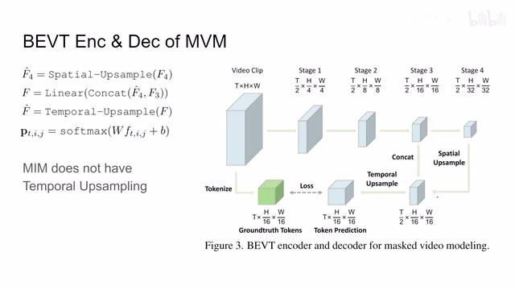
00:07:18–00:07:37 · 画面 027而且这里呢因为我们只有一帧嘛所以呢也不用做这个 timelapse sampling 这个呢是这个 decoder 的设计非常简单的这个 MLP 的组合那么最后呢我们就可以看到这个 loss 那我们现在有这个 ground truth 有这个预测出来这个 token 他们每一个呢其实都是一个 vector 那这个呢是这个 vector 的数量嘛那么对于这里面的每一个 vector 来说呢他们只要相似就可以了这里呢坐着用的是这个 log likelihood
00:07:37–00:08:10 · 画面 028
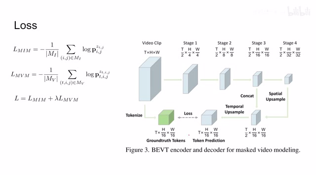
00:07:37–00:08:10 · 画面 028希望最大化 log likelihood，那么这个是 image 的，这个是 video 的，两个组合起来就是本文 pre-train 的时候用的 loss，非常简单的一个设计。好的，那么以上就是本文的主要技术细节了。那么下面我们看作者汇报的结果吧。首先针对不同的 pre-train 的结果，使用有监督的或者是 self-supervised 的方法，自用 image 的 encoder，迅出来 image encoder。
00:08:10–00:09:04 · 画面 029
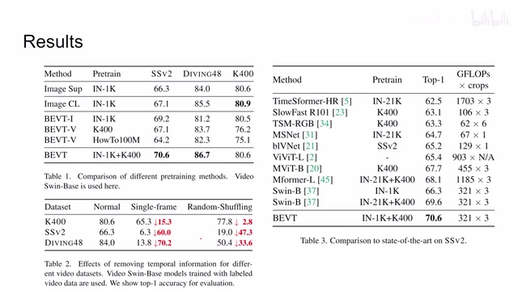
00:08:10–00:09:04 · 画面 029放到这个视频上的这个表现，那结合了这个 ImageNet 还有这个 Kinetics。那么本文的效果呢，取得了很好的改善。而且你可以看到这里呢，我们使用类似 BERT 的这个方法，在 ImageNet 和 Pretrain 那比之前的方法呢都有改善。那么再往下呢，作者说验证了一下这个 Temporal Information 它的这个重要性。这个呢，是我们原版的训练方法。
这里我们把所有的视频都替换成视频中的某一帧，就是这一帧不断的重复，不断重复。还有这里把这个视频的顺序更改一下，这样子发现性能有很大的下降，说明我们这个视频增加的这个 temporal information 是有用的。这里一些主要的结果包括其他数据结果，我们这里不完全放出来了，感兴趣的朋友欢迎去原文查看。那么最后是一些 ablation，我们看到比如这里我们的 tube masking。
00:09:04–00:09:05 · 画面 030
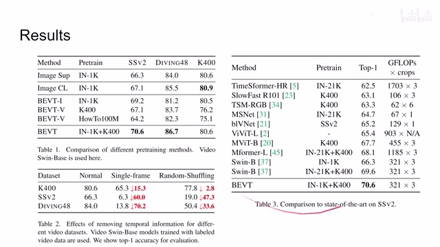
00:09:04–00:09:05 · 画面 03000:09:05–00:09:11 · 画面 031
00:09:05–00:09:11 · 画面 03100:09:11–00:09:23 · 画面 032
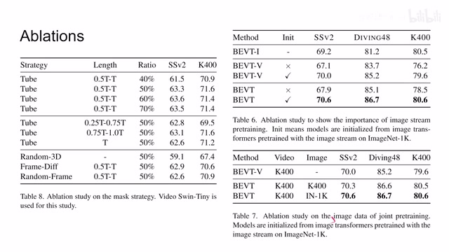
00:09:11–00:09:23 · 画面 032它的长度有多长，然后呢我们这个 mask 的 ratio 有多少啊。这里呢就是做了一些 ablation，还有呢包括不同这个 mask 的方法。这里呢我们刚刚证明了这个 video stream 很重要，image stream 呢同样的啊，有没有这个 pre-train 的这个 image net 啊，可以看到的性能的影响。那最后呢是这个 joint pre-training。那总的来说呢，这一篇呢是把 BERT 这些东西搬到这个 video，顺带的把 image 也加了进来。
00:09:23–00:09:24 · 画面 033
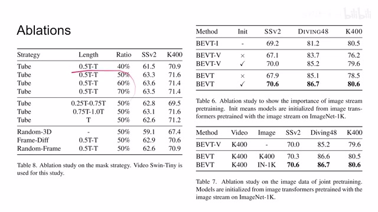
00:09:23–00:09:24 · 画面 03300:09:24–00:09:46 · 画面 034
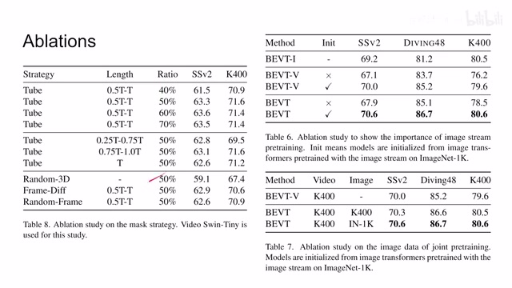
00:09:24–00:09:46 · 画面 034那正如作者所说呢，这个方法很直接，但是值得去研究，总有人要去做这么一个事情。那同时呢，我们要注意到它跟这个 MAE 的主要的区别，在这个预测的内容上，MAE 做的是原始像素的预测，这个呢做的是 token 的预测，所以呢它们还是很不一样的。那把握着这个区别呢，肯定呢后面就会有人做，说这个 MAE 这个东西放到 V6 上这是怎么样呢，这个相信我们不久呢就能看到结果。
00:09:46–00:10:21 · 画面 035
00:09:46–00:10:21 · 画面 035好了,以上就是我对这篇论文的一个简单的介绍,感谢您的收看,再见。
00:10:21–00:10:22 · 画面 036
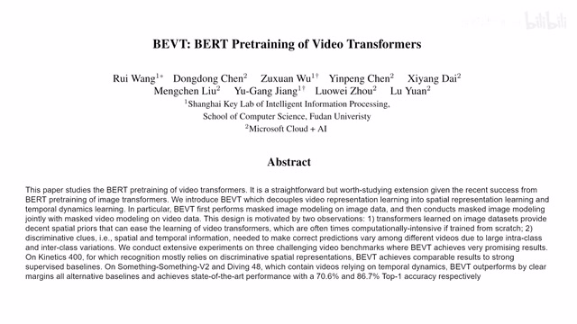
00:10:21–00:10:22 · 画面 036转写与来源说明 · 0 个自动复核提示
保留 23 个原始语音片段，0 个片段触发自动复核提示。提示仅用于定位可能的术语、重复或识别问题，不等于已确认错误。
讲解画面为源视频截图（640×360），不是可编辑 PPT 文件。全片按每秒 2 帧扫描内容变化，逐步展开页保留；连续动画保留代表画面。清晰度受源视频限制。
原视频：paper/合集_2026-10-16_新模型/[论文简析]BEVT BERT Pretraining of Video Transformers[2112.01529].mp4
SHA-256：571d15ef1a8f4169bba13de9e3004b9a75fc7415bf3081716bf43266905d5304
全文按视频语音与画面制作。原论文可从上方链接下载；完整资料包保留全文、原始逐字稿、字幕和校对记录。